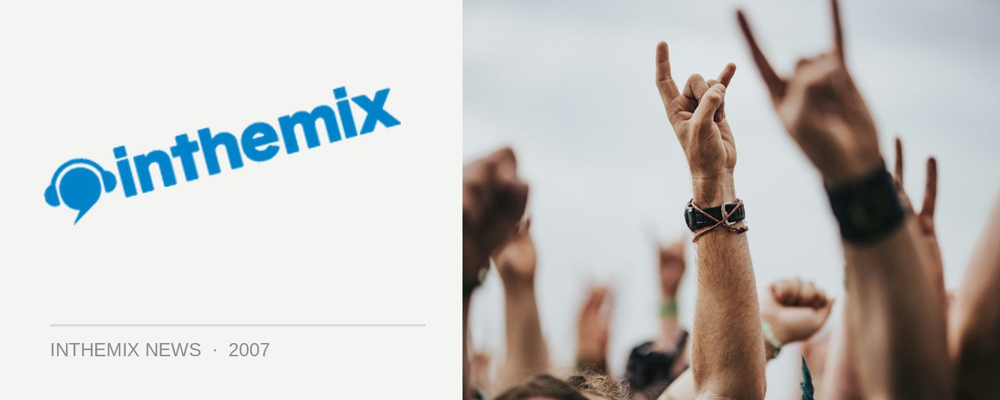

Famous takes wraps off launch party lineup
Wanna know who you’ll be listening to on Saturday 24th of March at the Famous opening night at Home nightclub? Check below for details as it’s less than two weeks until the big night.
Future Entertainment – the crew behind uber-popular dance events like Summadayze and Future Music Festival, are teaming up with Sydney’s biggest club Home to export their phenomenally popular weekly club night Famous.
Having launched in September at the renovated Queensbridge venue (old QBH) in Melbourne, Famous has proved to be the most popular weekly event in the southern state, with in excess of 2,000 clubbers gathering each and every week. To date they have hosted a staggering array of international guests including Sharam Jey, Princess Superstar, Mark Farina, Jon Carter, King Unique, Mark Knight and many more. We can expect just as many big-name acts in Sydney after it gets kicked off in Sydney.
Doors open 10pm for $25 entry, check below for lineup details…
FAMOUS MAINROOM
Goodwill
Carl Kennedy
Trix & Goodfella
Jamie Doom
Gus Da Hoodrat
INFAMOUS THEATRE
Crispin
Daniel Crocetti
Robbie Lowe
Carlos Zarate
THE TERRACE
Johnny Rad
Tim Sea
Dux Nuts DJ’s
The Heat